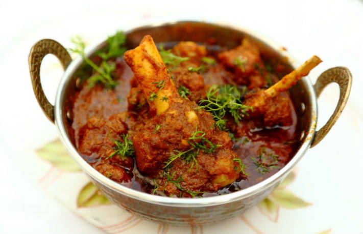
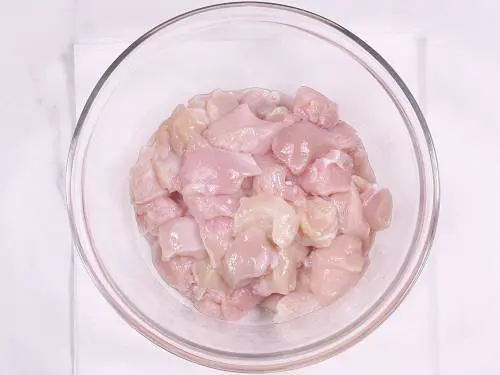
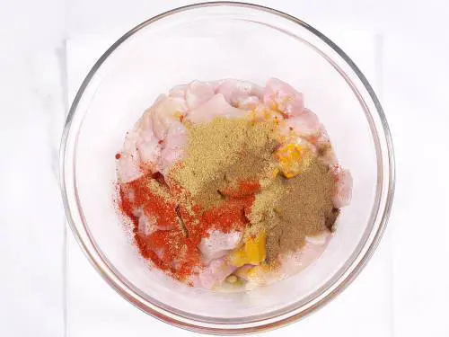
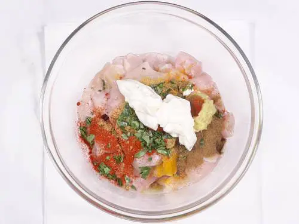
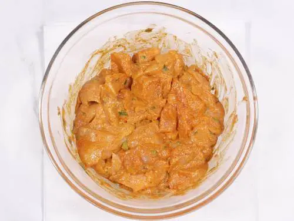
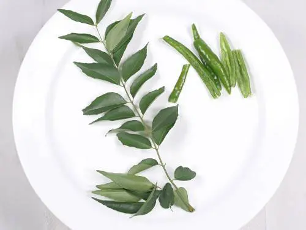

Our Popular Recipes
# 1 Chicken Biryani Recipe

- Take a Bowl
- Yogurt, Ginger, garlic paste,
- Salt, Garam masala, turmeric, lemon juice & red chilli powder
Ingredients
- 1 tablespoon vegetable oil
- 10 grams garlic (grated)
- 10 grams ginger (grated)
- 1 serrano chili peppers (to taste, minced)
- 5 grams mint (finely chopped)
- 10 grams cilantro (finely chopped)
- 1 tablespoon garam masala
- ½ teaspoon ground cinnamon
- 1 teaspoon salt
- 900 grams bone-in skin-on chicken thighs (or drumsticks)
Ingredients For Chicken

| S. NO | Biryani | Price |
|---|---|---|
| 1 | Spicy Biryani | RS 300 |
| 2 | Normal biryani | RS 280 |
| 3 | 2 piece biryani | RS 480 |
- 6 cups water
- 2 ½ teaspoons salt
- 5 pods green cardamom (smashed)
- 1 teaspoon cumin seeds
- 1 teaspoon cumin seeds
- 360 grams basmati rice (~2 cups)
Ingredients for Rice
- 2 tablespoon ghee
- 2 medium onions (sliced thin)
Ingredients for onions
- 1 cup reserved boiling liquid (from rice)
- ½ teaspoon saffron threads cilantro (for garnish)
Ingredients For Biryani
Preparation Of Chicken Biryani
Instructions
To marinate the chicken for the biryani, combine the vegetable oil, garlic, ginger, chili
peppers, mint,
cilantro, garam masala, cinnamon and salt in a large bowl and stir together. Add the chicken
pieces and
toss together making sure the chicken is thoroughly coated in the marinade. Allow the
chicken to
marinate for at least 1 hour or up to overnight.
In a pot wide enough to hold the chicken in a single layer, add the ghee and onions and
saute the onions
until they are well caramelized (15-20 minutes). Transfer the caramelized onions to a bowl
and set
aside.
While the onions caramelize, prepare the rice by washing in a strainer under cold running water until the water runs clear.
To par-boil the rice, add the water, salt, cardamom, cumin and bay leaf to a pot and bring to a boil. Add the rice and boil for 7 minutes. Drain the rice, reserving 1 cup of the liquid.
In the pot you caramelized the onions in, add the chicken in a single layer, skin-side down. Fry until golden brown on one side (about 5 minutes). Flip the chicken over and fry the other side until golden brown. Transfer the chicken back to the bowl you marinated it in.
To assemble the biryani, add the saffron to the rice and toss to distribute evenly. Add half the
rice
mixture to the bottom of the pot you browned the chicken in.
Top the rice with the chicken in a single layer.
Top the chicken with an even layer of caramelized onions.
Finish putting together the Biryani by adding the rest of the rice in an even layer. Add 1 cup of reserved liquid from boiling the rice. Cover the pot with a lid and put the pot on the stove over medium heat and set the timer for 20 minutes. When you can see steam escaping from under the lid, turn down the heat to low and continue cooking until the timer goes off and then turn off the heat.

Without opening the lid, set the timer for another 10 minutes to steam the biryani. Mix the Chicken Biryani together and then transfer to a serving platter. Garnish with fresh cilantro and serve.
# 2 Mutton Curry
Ingredients
- 1 kg Mutton / Lamb bone-in, cut into medium sized pieces
- 1 teaspoon Turmeric
- 1 tablespoon Salt divided
- 4 tablespoons Mustard Oil
- 1 teaspoon Fennel Seeds
- 1 Bayleaf
- 1 inch Cinnamon Stick
- 3-4 Cardamom Pods
- 3-4 Cloves
- 4 Green chillies slit lengthwise
- 3 large Onions finely chopped
- 1 tablespoon Ginger Garlic Paste
- 5 large Tomatoes finely chopped or pureed
- 1 tablespoon Coriander Powder
- 4 tablespoons Meat Masala different from curry powder, look for meat masala in Indian grocery stores
- 2 Potatoes quartered (optional)
- ½ teaspoon Garam masala
- 1 tablespoon Kasuri methi optional but highly recommended
- 1 inch piece Ginger julienned
- 1 tablespoon Ghee or Butter
Preparation & Instructions
- Add turmeric and 1 teaspoon salt to the mutton or lamb and rub all over. Set aside while you prep everything else
- Heat oil in a pressure cooker (electric or stovetop) and saute fennel seeds, bayleaf, cinnamon, cardamom and cloves for a minute. Add two green chillies, onions and ginger garlic paste. Cook this for 10-12 minutes stirring occasionally till the onions are a deep brown.
- Add tomatoes, coriander powder, meat masala and the remaining salt and cook for 5 minutes till the tomatoes break down slightly.
- Stovetop Pressure Cooker: Add mutton, potatoes and two cups of water and put the lid on. If using a stovetop pressure cooker, cook on high pressure for 20-25 minutes (5-6 whistles).
- Instant Pot: If using an electric pressure cooker or an instant pot, cook for 20 minutes on high pressurenand let the pressure release naturally or manually release the pressure after 15 minutes.
- Once the pressure is released, open the lid and switch on the flame again. Add more water if the gravy is too thick. Stir in garam masala, kasuri methi (if using), remaining green chillies, julienned ginger and ghee and simmer for another 3-4 minutes.
- Check and adjust seasoning. Let the curry rest for 15 minutes before serving.
# 3 Chicken 65

This delicious Chicken 65 will soon become your new favorite appetizer! Chicken 65 is a universal favorite of the South Indians and this is what we all have been eating in the restaurants for years. Be it an upscale restaurant or a budget eatery, chicken 65 is a crowd-pleaser and has found a top place on the menus & orders. Apart from being eaten as an appetizer, it is also eaten as a side with a South Indian meal in restaurants & households alike. It goes fantastic with
How to Make Chicken 65 (Stepwise Photos)
Marinate & prepare
1.Cube chicken to approximately ¾ inch pieces. If using bone-in chicken you may keep them bigger. But make sure the pieces are almost of the same size as this helps them to fry or cook evenly. This recipe needs 600 grams (1.3 lb) boneless chicken or 1 kg (2.2 lbs) bone-in chicken.
2. To the chicken . Add
- 1/3 teaspoon Salt
- 1 1/3 teaspoon red chilli powder (reduce for low heat )
- 1/4 teaspoon turmeric
- 1 teaspoon garam masala (or ½ tsp garam masala, ¾ tsp coriander powder, ¼ tsp cumin powder) 
- 1 tablespoon ginger garlic paste
- 2 sprigs curry leaves (finely chopped)
- 4 tablespoons curd (plain yogurt, refer notes)
- 1 teaspoon lemon juice 
- 2 teaspoons red chilli powder (Kashmiri/ byadgi)
- ½ to 1 tablespoon garlic paste (or crushed, read my notes)
- ¼ to ½ teaspoon sugar (optional but recommended for crispness)
- ¼ teaspoon salt (adjust to taste)
- 1 teaspoon lemon juice or vinegar (or ¼ cup thick yogurt, optional, cuts down the pungent flavor)
- 2 tablespoons water (leave out if using yogurt)
4. Marinate the chicken. Cover and marinate for at least 1 hour to a maximum of 36 hours in the refrigerator.
5. Rinse 2 sprigs curry leaves and 4 to 6 green chilies. Pat them dry with a kitchen tissue. Slit the green chilies and deseed them. Any moisture on the curry leaves and green chilies will splatter oil while frying. Also the chili seeds will burst.
Prepare Tempering Ingredients
6. Before frying the chicken prepare the tempering ingredients if you intend to make my spicy
tempering. You can also skip this if you want to simply make the Chennai style Chicken 65. But
this spicy tempering adds a punch to the dish. Set aside 1 tablespoon garlic chopped (2 large
cloves).
To a small bowl, add